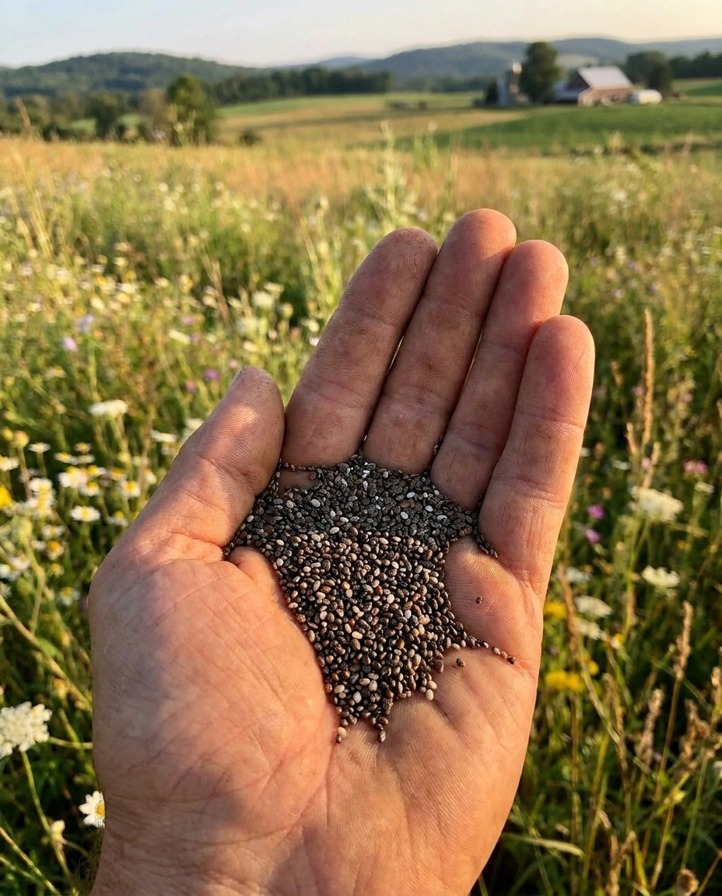

СЕЛЕКЦИОННАЯ ПРОГРАММА
"ЧИА"
Описание программы "Чиа"
Чиа представляет собой перспективную масличную культуру, обладающую значительным потенциалом использования. В странах Латинской Америки, прежде всего в Мексике, и на юго-западе США семена растения активно используются в пищевой промышленности.
Обладая высокой пищевой ценностью, семена чиа могут использоваться для приготовления разнообразных блюд и напитков, перерабатываться в муку. Кроме того, масло, получаемое из семян чиа, применяется в производстве красок.

Направления селекции:
- Скороспелость
- Холодостойкость
- Устойчивость к полеганию
- Устойчивость к осыпанию
- Дружность созревания
